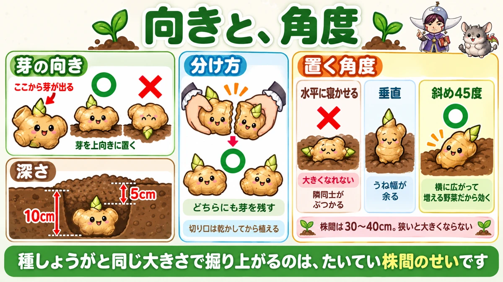
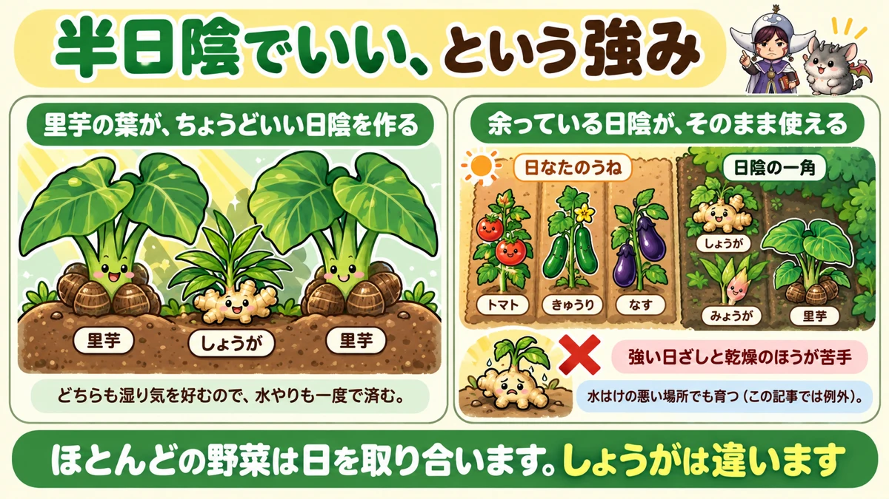

しょうが栽培の段取り帳｜芽出し・夏の管理・収穫と種の冬越し
どうも、8150（えいこう）です🌱 家庭菜園歴8年、理科の教員免許を持っていて、有機・無農薬で野菜を育てています。
📖 この記事の目次
この記事で分かること
- 種を選ぶときは、芽の位置、硬さ、乾燥や腐敗の有無を確認します。小片を増やすより、育ち始めの蓄えを残します。
- 植える日を決める目安は、春の地温と地域の冷え込み。店に並んだ日と、畑へ入れる日は分けて考えます。
- 春は芽が動く暖かさを確保し、夏は強い日差しと水切れに備えます。季節で必要な世話が変わります。
- 夏の早採りと秋の掘り上げは、残した株で食べ分けます。途中で抜いた株から秋にもう一度収穫する計画にはしません。
- 葉の黄ばみは、季節の変化だけでなく根元の傷みでも起こります。時期、土の湿り、茎の状態を合わせて調べます。
- 翌年用を残すなら、収穫前に保存場所を決めておきます。食べる分と植える分は、洗い方も冬の置き方も別です。
しょうがを育てたいとき、最初に決めると楽なのは『夏に若いものを味わう』『秋の塊を大きくする』『翌年の種も残す』のどこまで目指すかです。同じ植物でも、目的が違えば抜くタイミングが変わります。ここを決めないまま夏に次々抜くと、秋の楽しみが先に食卓へ行ってしまうんですよね☺️
このページでは、種しょうがの準備、植え付け、夏のお世話、収穫、冬の保存を順につなぎます。これから始めるみなさんは早見と手順から、すでに困っている場合は症状の章から読んでください。全部を一度に覚える必要はありません。いま畑にある株の段階に合わせて使えるようにしました。
大切なのは、しょうがの好む湿り気と、水が逃げない状態を分けることです。日差しを和らげられる場所は候補になりますが、雨のたびに水没する場所まで適地という意味ではありません。『日陰なら何でもよし』『水を多くやれば安心』と、一つの性質だけで決めないのが栽培の出発点です。
早見：しょうがの育て方（ひと目で分かる数字）
植える前から収穫までの目安
- 植え付け時期：4〜5月の説明があり、4月下旬〜5月上旬、4月後半〜5月中旬という幅もあります。朝夕の低温を避け、5月の連休後に進める方法もあります。
- 地温：植え付けの目安は15℃以上。気温ではなく土の温度の話です。春の暖かい昼だけで決めず、朝の冷え込みも確認します。
- 生育に向く温度：25〜30℃という説明があります。ただし、真夏の強い直射日光や極端な高温に耐え続けられるという意味ではありません。
- 種の大きさ：1片50〜60gを使う説明が中心で、40〜50gという例もあります。重さをそろえるためだけに、芽のない部分へ切り分けないでください。
- 残す芽：1〜2個、2〜3個、3〜4個の説明があります。共通するのは、植える各片に芽を残し、細かくしすぎないことです。
- 分けた切り口を乾かす期間：半日、ひと晩、2〜3日、約1週間という方式差があります。種全体をしわしわにするための作業ではありません。
- 春の芽出し：3〜4週間を見込む方法があります。保温した別の実例では約2週間、冬から始める方式では約3か月。開始時期と温度が違うので、日数だけを比べません。
- 株間：30cmまたは40cmの実例が主な目安です。30〜60cmという広い説明もありますが、60cmを全株の標準にはしません。
- うね幅：今回の材料には、すべての方式へ使える共通値がありません。株間、植える列、里芋の位置、通路を先に決め、横へ広がる余裕を確保します。
- 植え穴と土の厚さ：穴を10〜15cmほど掘る例がありますが、芽の上に戻す土は約5cm、5〜6cmという説明です。穴の深さと覆土の厚さは別の数字です。
- 土の酸度：pH5.5〜6.0という説明と、酸性に比較的強く酸度調整を省く説明があります。測らずに一律の調整量を決める材料にはしません。
- 元肥：植える前の土づくりで準備します。材料には共通の配合や製品をまたいで使える量がないため、過去の施肥と使用する製品の表示を確認します。
- 初回の追肥・土寄せ：草丈10〜15cm、本葉が広がったころを区切りにする方法があります。10〜20cm、10〜30cmという説明もあります。
- 次の追肥：初回から約1か月後、草丈30cmという方法と、草丈50cm・7月下旬という方法があります。
- 追肥回数：肥料をあまり必要としないとする説明と、生育中に2〜3回行う説明があります。後者には、追加の3回目を8月中旬ごろまでに終える方法もあります。
- 葉しょうが：夏から初秋の早採り。7月後半、7〜8月、8〜9月の説明があり、植えて約3か月後という目安もあります。
- 根しょうが：10〜11月の説明が多く、9〜10月の早めの例もあります。葉全体の黄ばみや葉先の枯れと、地域の霜の見込みで決めます。
- 寒さの目安：最低気温が10℃以下になり始めたら収穫を考える方法があります。霜を受ける前に掘り終える段取りを優先します。
- 収穫までの日数：葉しょうがには約3か月という説明があります。秋の収穫は春植えから秋までの長い栽培ですが、材料に全方式共通の正確な日数はありません。
- 連作の間隔：2〜3年、3〜4年、3〜5年あける説明と、連作の影響は小さいという説明があります。数字を平均せず、病気の履歴も分けて考えます。
- 種保存の温度：15℃前後、13〜16℃という説明があります。13〜15℃前後という目標を考える場合も、16℃を上限とする説明があることは残します。
- 種保存の湿度：90%前後、90%以上という説明があります。高湿度と、表面に水がたまることは別です。箱を完全に密閉する指示ではありません。
数字を畑の計画に移すとき
日付を一つだけ選ぶ前に、『自分の地域』『買った種の用途』『芽出しをするか』『地面を覆って保温するか』をそろえます。冬に芽出しを始めた例と、暖かくなって直接植えた例では、出芽までの待ち時間が違って当然です。早い記録を見つけても、その日数を約束にしなくて大丈夫。
まずメモしたいのは次の項目です。
- 種を入手した日と植えた日を区別した
- 芽出しをした場合は、その開始日も記録した
- 株間と植え方を記録した
- 初回の土寄せは暦だけでなく草丈と露出で判断する
- 夏に抜く株と秋まで残す株を分けた
- 秋の霜の見込みと、種を置く場所を調べた
葉しょうがの月に幅があるのは、『夏なら同じ大きさ』ではないからです。早く植えた株、遅く芽が出た株、違う用途の種では、食べたい部分が育つ時期も変わります。月は見回りを始める合図として使い、実物を見る手間まで省かないようにしましょう。
作業の手順（時期の順）
1．夏に食べる分と、秋へ残す分を決める
- 若いしょうがを食べたいか、秋に大きな塊を掘りたいか、優先する楽しみを選びます。
- 両方をねらうなら、植える段階で早採り用と秋収穫用の株を分けておきます。
- 翌年の種も残す場合は、その分を含めて植える面積を決めます。
- 種の売り場では、用途や植え時の表示を読み、予定に合うものを選びます。
夏の収穫は、秋の収穫へ加算されるおまけではありません。株を抜けば、その株が秋まで育つ時間はそこで終わります。早採りの割合に共通の正解はないので、食べたい量と残したい株数から考えてください。夏に少し味見し、残りを待つ計画なら、両方の違いを確かめやすいです。
種を残す目的まで入れると、秋には『食用』『翌春の植え付け用』の二つへ分けることになります。掘り上げてから全部洗い、そのあとで種も欲しかったと気づく流れを避けるため、冬の予定を春に一行書いておきましょう。なんか先の話すぎるようですが、この一行が秋の作業を助けます。
2．種しょうがを見て、植えられる片へ分ける
- 全体を見て、極端に乾いたもの、カビや腐敗があるものを避けます。
- 触って硬さを確かめ、芽になる突起の位置を探します。
- 大きな塊は節の位置を見て分け、分けた各片に芽があるか確認します。
- 50〜60g前後を使う方法などを参考にしつつ、数を増やすために細分化しすぎないようにします。
- 切り口を乾かす方式を選び、植えるまでに種全体を乾き切らせないようにします。
芽の多さだけを見て買うより、硬さと水分の残り方も合わせて確認します。芽が見えていても、本体が傷んでいれば、その先の育ちを支える状態ではありません。土が付いている種も候補ですが、土付きだから自動的に健全、とは考えないでください。
分け方で大切なのは、できた片がそれぞれ育ち始められることです。芽のないかけらを作ってまで重さをそろえる必要はありません。芽数には1〜2個から3〜4個までの説明がありますが、どの説明も『芽を失った小片を大量に作る』ことを目指してはいません。
切り口の乾燥は半日程度の方法と、数日かける方法があります。期間の長い方が必ず良いわけではなく、置く場所と乾き方も違います。切った面を落ち着かせる作業と、種の蓄えまで乾燥で失わせることを分けてください。資材を付けずに進める方法もあるため、切り口用の特定商品を必須にはしません。
3．芽出しをするか、暖まった畑へ直接植えるか選ぶ
- 植える時期の土の温度と、保温できる条件を確認します。
- 芽の動きを先に確かめたい場合は、芽出しの時間を植え付け予定へ組み込みます。
- 容器で芽出しする方法では、芽を上へ向け、暖かさと適度な湿り気を保ちます。
- 水を足す前に乾き具合を確認し、いつもびしょびしょの状態にしません。
- 芽が動くまで何度も取り出さず、春なら3〜4週間かかる例もあることを見込んで待ちます。
- 直接植える方法なら、地温を確保できる時期や地面を覆う方法を合わせて準備します。
芽出しを勧める説明は、植える前に芽の動きを確かめる点を重視しています。一方、直接植える説明は、畑の土を暖めてその場で出芽させる段取りです。どちらも温度を無視してよい方法ではありません。手順の一か所だけ取り出し、『芽出し不要だから寒くても植えられる』と受け取らないことが大切です。
容器の中は、外の畑より乾燥や過湿を見落としやすいことがあります。上が乾いたようでも下に水が残る場合があるので、表面だけで毎日水を足す習慣にしないでください。保温する工夫も、密閉して水分を閉じ込めれば完成、ではありません。暖かさと湿り気を確保しながら、腐敗へ向かう状態を避けます。
出芽の日数には大きな幅があります。約2週間の例、春の3〜4週間の例、冬開始で約3か月の例は、同条件で速さを競った結果ではありません。待つ日数が違う説明に出会ったら、『いつ始めたか』『どんな温度を保ったか』を先に見ましょう。
4．場所を選び、水の逃げ道を整える
- 真夏に強い日差しが続く場所か、昼の一部に陰ができる場所かを見ます。
- 雨のあとに水が引くか、外から水が流れ込むかを確認します。
- 前にしょうがを育てた場所か、根元が腐る症状が出た場所かを記録します。
- 必要に応じてうねを高くし、通路や周囲の水が抜ける形を整えます。
- 元肥を準備する場合は使用する製品の表示を確認し、以前に入れた肥料と重ねて考えます。
- 株間、里芋を植える位置、歩く通路を決めてから、うねの形を仕上げます。
しょうがの席を探すときは、日当たりの良い一等地だけが候補ではありません。夏の直射を和らげられる場所を利用できます。ただ、暗い場所へ押し込めばよい、という話にもしたくないです。どの時間に日が入り、どの時間に陰になるかを見ると、強い日差しを避ける場所と、ほぼ光が届かない場所を区別できます。
湿り気を好む性質から、排水を省略しないようにしてください。大雨や冠水、高温多湿の条件では、根茎の腐敗が問題になります。土を乾かしすぎない工夫と、余分な水を外へ逃がす工夫は、両方を用意できます。水を止めるだけの低いくぼみより、湿りを保ちながら水が抜ける形を目指します。
元肥は植える前の肥料です。追肥で小さな穴に入れる量を、そのままうね全体の元肥へ置き換えることはできません。肥料の種類が違えば同じ体積でも含む成分は変わります。ここでは未確認の配合量を作らず、製品の表示と畑の履歴を確認する段取りにしています。
5．芽の方向と、上にかかる土を確かめて植える

- 30〜40cmの株間の実例を参考に、植える位置へ印を付けます。
- 種の芽がある面を確認し、芽が上へ出られる向きで置きます。向きが分かりにくいときは横置きの方法もあります。
- 植え穴は種の形に合わせて掘り、穴の底までの深さと、種の上に戻す土を別に見ます。
- 芽の上へ約5cmの土を戻す説明を参考にし、穴を掘った深さの分だけすべて上へ積まないようにします。
- 上から強く押し固めず、植えた位置が分かるようにしておきます。
- 土に湿りがあれば機械的に追加の水を入れず、乾いている場合は水分を補います。
植え付けで混乱しやすいのは、『深さ10cm』が何を測った数字なのかです。穴が10cmでも、その中へ厚みのある種を置けば、芽の位置は穴底ではなくなります。最後に芽から地表までどれだけ土があるかを見れば、数字の取り違えを防げます。ここ、地味ですが大切です。
図にある45度は、うねに対する平面上の置き方として読みます。種を土の中へ45度立てかけるという必須条件ではありません。横へ広がる根茎に使わせたい空間を考える工夫です。芽を上へ向けることと、うねの中でどちらへ向けることは、別々に確認してください。
水やりには、湿った土なら不要とする説明と、植え付け時に十分与える例があります。すでに湿った土へ、乾燥した土と同じ水を追加する必要はありません。まず種が置かれる場所の湿りを確かめます。株間を確保しても、植える位置を毎回見失うと、草取りや土寄せで種の近くを傷めやすいので、印も役立ちます。
6．出てきた芽と、地面を覆うものの接触を見る
- 出芽を待つ間は、植えた位置と日付を確認できるようにします。
- 黒い被覆を使った場合は、表面が盛り上がっていないか見ます。
- 芽が下へ引っかかっていたら、穴を広げるなどして外へ出られる状態にします。
- 一本出たあとも、別の芽が違う位置から伸びていないか確認します。
- 芽が傷んだ株は、残っている芽や根元の状態を見てから次の対応を決めます。
黒ポリマルチは、土を覆う黒い薄いシートのことです。春の地温を上げる、乾燥を抑える、草を減らすという目的で使う方法があります。ただ、芽が穴とずれたまま熱い面へ触れると傷むことがあります。敷いた時点でお世話が終わる道具ではなく、出芽の通り道を確認する必要があるんですね。
出芽する位置は一か所とは限りません。最初の芽を見て安心したあとにも、横から次の芽が出てくることがあります。小さな盛り上がりを見つけたら、草が押しているのか、芽が当たっているのかを確認します。傷んでから肥料を足すより、通り道を開ける方が原因に合った作業です。
7．葉が育ったら、追肥と土寄せを分けて考える
- 本葉の広がり、草丈、株元の露出を見ます。
- 追肥をする方式では、初回の区切りを草丈10〜15cmなどで確認します。
- 株元へ肥料を直接集中させず、根が広がる場所へ与える方法と製品の表示を確認します。
- 周りの土を株元へ寄せ、地表へ出そうな根茎を覆います。
- 初回から約1か月後や草丈30cmを区切りにする方法では、次の作業日を記録します。
- 夏にもう一度行う場合は、日差しや土の温度、被覆を残すかどうかも合わせて確認します。
追肥は栄養を補う作業で、土寄せは根茎を土で覆い、株元を安定させる作業です。一緒に行う説明が多くても、役目は同じではありません。肥料を省く方式を選んだからといって、根茎の露出まで放置する必要はないですし、土を寄せたから肥料の条件を考えなくてよいわけでもありません。
新しいしょうがが地表付近へ広がったら、光へさらさないように土を補います。土寄せには緑化を防ぐ、倒れにくくする、排水を改善するといった役目が説明されています。一度に高く積めば何でも解決するわけではなく、株の状態を見て進めます。強い雨のあとには、寄せた土が流れていないかも見てください。
肥料の量には体積、穴の数、回数が違う説明があります。ここで一つの『何cc』を標準として決めることはしません。複数の説明から多い量だけを集めて足すのも避けます。追肥の時期と、製品の量を別々に確認して使いましょう。
8．夏は、遮光・乾燥防止・排水を一緒に見る

- 強い日差しを受ける時間を確かめ、必要なら陰を作る方法を選びます。
- 里芋と組み合わせる場合は、夏に葉陰ができる配置と、互いの株の余裕を確認します。
- 真夏の熱さが問題になる場合は、黒ポリマルチを外す方式も検討します。
- 外したあとは、乾かした草などで地面を覆い、裸の土を乾燥させたままにしません。
- 水やりは朝夕の涼しい時間に、土の乾きと雨の状況を見て行います。
- 大雨のあとには逆に、水が引いているか、茎元が柔らかくなっていないかを確認します。
里芋の大きな葉を利用すると、夏にしょうがの上へ陰ができます。水や土寄せの管理もまとめやすい組み合わせです。ただ、里芋を近づければ近づけるほどよいわけではありません。間隔が狭いと養分の取り合いを懸念する説明もあります。里芋側の増収まで約束する組み合わせとしては扱いません。
地面を覆う草は、材料では乾かしたものを使う方法が示されています。刈った直後の生草を厚く積む方法と同じにはしないでください。敷いたあとも、ときどき下の湿りを見ます。地表の見た目が乾いていても下は湿っていることがあるし、逆に薄い覆いだけでは真夏の水切れを防ぎ切れないこともあります。
水を十分に与える説明はありますが、『水が抜けず、ずっとたまったままでよい』という意味にはしません。水やりは乾燥への対応、排水は余分な水への対応です。この二つはけんかせずに両立できます。天気が続けて晴れる週と、大雨が続く週で、同じ作業を繰り返さないのがポイントです。
9．夏の早採りは、残す株を確かめてから
- 夏から初秋に、早採り用として決めた株の育ちを見ます。
- まず一株を試しに掘るなどして、根元の太り方を確かめます。
- 抜きにくい場合は無理に引かず、周囲の土を緩めます。
- 秋用の株は残し、周りの土が崩れた場合は戻しておきます。
- 食べる分は洗い、香りや柔らかさを楽しみます。
葉しょうがは、若いうちに採る楽しみ方です。7月後半を示す説明と8〜9月を示す説明があるので、日付だけで一斉に抜くより、根元の育ちを確かめます。植えて約3か月という数字も、すべての地域や種の収穫保証ではありません。出芽が遅れた株は、地上の育ちも合わせて見ましょう。
夏に柔らかいものを食べ、秋には大きく育ったものを掘る。家庭菜園なら、同じ場所で育つ途中の違いを見られます。ただし同じ一株を二度抜けるわけではないので、楽しみを分けるのは残した株どうしです。欲張るなら、植えるときの計画から欲張っておくと安心です☺️
10．秋は霜の前に掘り、食用と種用を分ける
- 秋になったら葉全体の色、葉先の枯れ方、地域の最低気温を確認します。
- 霜の見込みから掘り終える日を決めます。太らせたい株でも、寒さへ当てるために残しません。
- 株元を持ってゆっくり引き、固い土では周囲から掘って持ち上げます。
- 新しく育った部分だけでなく、元の種しょうがが土に残っていないか見ます。
- 病気や傷みのないものから翌年用を選び、食べる分と別に置きます。
- 食用は必要に応じて洗い、種用は土を少し残したまま保存の準備へ進みます。
葉が黄色くなるころという目安は、秋の健全な株の収穫判断です。真夏に一株だけ急に黄ばみ、茎が崩れている場合まで、普通の収穫時期として待たないでください。色は同じでも、時期と根元の状態が違います。収穫サインと不調のサインを分けると、掘る理由がはっきりします。
種用はできるだけ肥大させてから残す方法がありますが、霜の直前をねらいすぎて作業できなくなるのは困ります。休日しか畑へ行けないなら、予報と行ける日を合わせて決めましょう。『もう少し育てたい』という気持ちと、『安全に掘れる日がある』という段取りは、両方必要です。
11．冬の種保存は、温度を見て置く
- 健全な種用を選び、葉を付け根近くで切り、太い根を整理します。
- 水洗いせず、適度な土付きの状態にします。泥でびしょびしょなら日陰で少し落ち着かせます。
- 袋を使う方法では口をゆるく閉じ、乾燥を防ぎつつ完全な密閉を避けます。
- 段ボール箱などへ入れ、温度変化の小さい室内へ置きます。
- 15℃前後、13〜16℃という説明を参考に、箱を置く場所の温度を確認します。
- 保存中も開けて、しわ、カビ、腐敗、水滴の多さを見ます。
- 春に室温が上がってきたら、予定より早く芽が動いていないか確認し、置き場所を調整します。
箱の種類を選ぶ前に、置く場所がどのくらい冷えるかを知ることが先です。同じ家の中でも、暖房の風が当たる場所、玄関に近い場所、窓際では条件が違います。『室内』という名前だけで安心せず、保存する高さや箱の近くで温度を確かめます。
寒い地域では保温性のある箱を使う方式もあります。ただ、保温は熱が逃げるのを遅らせる工夫です。箱の名前を替えるだけで、寒い場所がずっと適温になると期待しないでください。温度を見て場所を決め、箱で変化を和らげる順です。
土付きで洗わない保存は、翌春の植え付けへつなぐための方法です。泥が水を含みすぎているなら少し乾かし、逆に種全体をからからにはしません。『乾かす』という同じ言葉でも、分割した切り口の処理と、収穫時の泥の調整と、冬の乾燥防止は目的が違います。
暖かすぎると、春を待たずに芽が出る場合があります。秋に適した場所が、春もそのまま適するとは限りません。箱へ入れた日をゴールにせず、翌春に硬さのある種を取り出せるところまでがお世話です。冬の見回りも、栽培の続きなんですよね。
失敗の見分け方（症状→原因→やること）
植えた場所に、なかなか芽が見えない
- 症状：植え付け後も地表に変化がなく、ほかの株との差が気になります。
- 考えられる原因：地温が低い、芽出しをしていないため時間がかかる、種が乾いた、腐敗した、上にかけた土が厚い、といった可能性があります。
- やること：植えた日、芽出しの有無、土の温度と湿りを確認します。被覆を使うなら、その下に芽が当たっていないかも見ます。
最初の行動を『全部掘り返す』にしないことが大切です。芽出しの方法でも数週間待つ例があるので、早く出た株と比べてすぐ失敗とは言えません。冷たい土へ早植えしたのか、暖かい条件でも変化がないのかで、見込みが違います。
一方、湿った土がずっと冷たいままなら、ただ長く待てばよいとも限りません。種の傷みが疑われるときは、必要な範囲をそっと確認し、柔らかく崩れたものと硬さのあるものを分けます。硬い種まで一斉に捨てる、毎日掘って確かめる、水を追加し続ける、という三つを避けましょう。
被覆の下にふくらみがあり、芽が傷んでいる
- 症状：黒いシートが押し上げられ、穴の横で芽が曲がったり枯れたりしています。
- 考えられる原因：出芽位置と穴がずれ、芽が熱い面へ触れている可能性があります。
- やること：芽の通り道を開け、ほかの新芽も同じように引っかかっていないか確認します。
これは、芽が伸びようとしているのに出口が合っていない状態です。追肥より、まず接触をなくす作業が先です。一本が外へ出ても、横の芽の出口まで確保できたとは限りません。何度か見回って、盛り上がりの位置を確かめます。
傷んだ一本だけで株全体の回復を約束することも、反対に全滅と決めることもしません。残る芽と根元の状態を見ます。植えた位置の印があると、芽を探すときにむやみに土を広く動かさずに済みます。
強い日差しのあと、葉先が傷んでいる
- 症状：真夏に葉先が傷み、暑い場所の株ほど元気がありません。
- 考えられる原因：直射日光、極端な高温、土の乾燥が重なっている可能性があります。葉だけでは一つに断定できません。
- やること：日が当たる時間、地面の覆い、土の湿りを確認し、陰を作ることと水分の管理を組み合わせます。
暑いのが好きという説明を、そのまま炎天下での耐久力に置き換えないようにします。春の出芽に暖かさが必要なことと、夏の葉が強烈な光を受け続けることは別です。葉が傷んでから水だけを増やしても、日差しの強さは変わりません。
黒い被覆を残す場合は、夏の熱さも確認します。外す方式を選ぶなら、そのあとに乾かした草などで地面を覆う段取りを用意してください。覆いを全部なくして、今度は乾燥させてしまうと、対策が次の不調へつながります。
土が乾き、葉の勢いも落ちている
- 症状：晴天が続き、覆いの下まで乾いています。地上部も伸びが弱く見えます。
- 考えられる原因：水切れ、地面からの水分の逃げやすさ、強い日差しによる負担が候補です。
- やること：朝夕の涼しい時間に水分を補い、地面の覆いと夏の陰を見直します。水がしみ込んだかも確認します。
葉が元気でないと、肥料不足へ気持ちが向きやすいです。でも根が使える水の条件が整っていなければ、肥料だけで補うことはできません。まず土を見ます。表面が乾いたことと、種や根のあるところまで乾き切ったことを区別すると、水を足す判断がしやすくなります。
毎日の少量の水で表面だけ湿らせることと、必要な部分へ水が届くことも同じではありません。水をやったあとに地面がどう変わったかを見て、雨や土の保水性に合わせて調整します。材料には固定の毎日量がないので、株数だけで水量を計算する表は作りません。
夏に茎元が柔らかくなり、倒れてくる
- 症状：地際の色が変わり、茎が柔らかく中身の乏しい感じになり、倒れます。根茎が飴色に変わって腐る説明もあります。
- 考えられる原因：高温多湿や冠水が関わる根茎腐敗病が候補です。ただし見た目だけで病名を確定しません。
- やること：雨のあとに水が残っていないか調べ、流入する水と排水を見直します。傷んだ株を健全な種として保存へ回しません。
乾燥に弱いからといって、しおれる株へ水を足し続けないでください。土がすでに湿っていて根元が崩れる場合は、水不足と違う状況です。水の量を増やす前に、根元の硬さと地面の湿りを見ます。原因と逆の世話を続けないための確認です。
排水を改善しても、すでに腐った組織が元へ戻るという説明ではありません。ほかの株を含めて被害が進む、判断がつかない場合は、地域の園芸相談窓口などへ実物や写真を持って相談します。未確認の薬剤名や資材を、治療の決め手としてここへ足すことはしません。
秋に掘った塊が、思ったより小さい
- 症状：地上部はあったのに、掘ると新しい部分があまり増えていません。
- 考えられる原因：小さすぎた種、狭い株間、遅い出芽、夏の乾燥や高温の負担などが候補になります。一つだけを原因と決めません。
- やること：種の大きさ、植えた日、出芽したころ、株間、夏の管理を順に振り返り、次の栽培で変える点を絞ります。
小さい収穫を見て、即『肥料が足りなかった』と結論にすると、翌年に増肥だけして同じ問題を残すことがあります。そもそも小さな種から始めた、出芽が遅くて育つ時間が短かった、夏に乾いた、という条件を先に整理してください。
株間30cmと40cmの説明はありますが、同じ畑で比べた収量試験ではありません。40cmへ広げれば何倍になる、といった数字は作れません。記録から狭さが疑われるなら間隔を見直す、乾燥が続いたなら覆いと水やりを見直す、という形で次の行動を選びます。
株元のしょうがが土から見えている
- 症状：根茎の一部が地表に出て、直接光を受けています。
- 考えられる原因：肥大に対して土寄せが足りない、雨で寄せた土が流れた、といったことが考えられます。
- やること：周囲の土を寄せて露出を減らし、次の大雨や強風のあとにも状態を確認します。
土寄せのタイミングを草丈だけで決めていると、予定日前の露出を見落とすことがあります。背が何cmかを見る日にも、根元へ目を移してください。新しいしょうがの緑化を防ぐという目的が分かれば、暦に合わない露出にも気づけます。
倒れやすくなっている場合は、強風へ向けた株元の安定も確認します。ただし、茎が腐って倒れた状態は、健全な株が風で傾く状態とは違います。土を寄せる前に、茎元が硬いかどうかを見ましょう。
保存中に、種がしわしわになってくる
- 症状：秋には硬さがあった種が、冬の箱の中でしぼんでいます。
- 考えられる原因：乾燥、袋の閉じ方、置き場所の暖房や温度変化が候補です。
- やること：箱の中と袋の状態を見て、乾燥を抑える方法を見直します。少し水分を補う方法でも、びしょびしょにしないようにします。
乾燥を防ぐために、湿らせたものを種へ密着させれば必ず安全、とはしません。温度が高い条件ではカビが問題になる説明もあります。乾燥を見つけたら、まずどうして乾くのかを探します。暖房の風が当たる場所へ置いたまま、水だけ追加し続ける対応では管理が難しくなります。
外側がしわしわなものと、柔らかく腐ったものは分けて見ます。どちらにも同じように霧吹きするのは避けてください。保存中に確認するのは、温度、乾燥、腐敗の三つです。箱を開けるたびにこの順で見れば、思いつきの水足しを減らせます。
保存中にカビや柔らかい部分が出た
- 症状：箱の中でカビが見える、種が軟らかく崩れる、表面が過度にぬれている状態です。
- 考えられる原因：過湿、密閉、傷んだものの混入、温度条件のずれなどが考えられます。
- やること：傷んだものを健全なものと分け、袋や箱の閉じ方、水分の状態、置き場所の温度を確認します。
高い湿度を保つ目標と、種の表面へ水をためることは違います。袋が結露でぬれている、底へ水がたまる、といった状態なら、『湿度が足りないかも』と水を追加する場面ではありません。保存容器の役目を見直します。
腐敗した部分を、来春に植えれば回復する種として数に入れないでください。食用へ回せるとも決めつけません。箱に何個残したかより、植える段階で健全な片を確保できるかが大切です。
説明が分かれていること
芽出しは必要なのか
- Aという説明：栽培動画の一群では、芽出しを先にして、芽の動きを確かめてから植える方法を強く勧めています。
- Bという説明：別の栽培動画では、黒ポリマルチで地温を確保し、芽出しをせずに畑へ植えています。必須ではないが、出芽をそろえたいなら行うという説明もあります。
- どう考えればよいか：芽出しの有無だけで成功率を決めず、植える時期と土を暖める段取りを一緒に選びます。
同じ種、同じ畑、同じ温度で芽出しあり・なしを比べた試験があるわけではありません。強く勧める言い方があっても、その成功率をみなさんの畑へ保証する数字として持ち込みません。芽出しは状態を先に確認できる方法、直接植えは畑の条件で出芽を待つ方法として理解します。
切り口は、半日か数日か
- Aという説明：分割したあと、日陰で半日程度軽く乾かす方法です。切り口用の資材を付けずに進める説明があります。
- Bという説明：2〜3日かける方法、ひと晩置く方法、植え付けまで約1週間置く方法もあります。
- どう考えればよいか：乾かす場所と種の状態が違うため、日数を平均して標準にしません。切り口の処理と、本体の乾燥を分けます。
『日数が長いほど腐りにくい』という比較結果は、材料にはありません。種が乾き切るまで置くことを目的にせず、選んだ方法の前提を確認してください。芽のある小片ほど乾燥の影響を受けやすい点にも注意し、細かく分ける方法と長い乾燥期間を気軽に組み合わせないようにします。
芽はいくつ残すのか
- Aという説明：栽培動画には、約50gで芽1〜2個、50〜60gで芽2〜3個という分け方があります。
- Bという説明：50〜60gで芽3〜4個、最低2個でできれば3個以上という分け方もあります。
- どう考えればよいか：一つの芽数を唯一の条件にはせず、各片に芽があり、種の蓄えも残ることを確認します。
芽数と重さは別々の話ではありません。数を多く残そうとして極端に大きな塊を使う方法も、一つずつに切って片数を増やす方法も、ここで挙げた例と同じ条件ではなくなります。材料の共通点は『芽を残す』『小さくしすぎない』です。数字を守るためにその二つを崩さないようにしてください。
30cmと40cmの株間は、どちらを選ぶのか
- Aという説明：省スペースの栽培例では30cmが多く使われています。
- Bという説明：里芋との混植や、根茎の広がりを考える例では40cm。30〜60cmという幅を示す説明もあります。
- どう考えればよいか：用途、植える列、混植する株の位置をそろえて決めます。広い方の数字だけで増収を保証しません。
株間は、地上の茎の隙間だけではなく、地下で新しいしょうがが広がる空間にも関わります。ただし、狭さだけですべての小さい収穫を説明することはできません。出芽や夏の水分も影響するので、間隔を変えるときはほかの管理も記録します。
斜め45度は必須なのか
- Aという説明：芽を上へ向け、縦置きまたは横置きで植える方式があります。
- Bという説明：うねに対して垂直や斜め45度に配置し、横へ広がる余地を使う方式があります。
- どう考えればよいか：芽の上下と、うねの中の配置を分けます。45度は空間を使う工夫として扱い、全方式の必須条件にしません。
45度の説明は複数ありますが、同じ系統の栽培例です。多数の独立した比較試験で決まった角度、というわけではありません。うねの形や株の並びが変われば、どこへ広がる余地を残したいかも変わります。角度の暗記より、種を置いたあとに周囲の空間を見ることが役に立ちます。
黒ポリマルチは、夏にも残すのか
- Aという説明：乾燥と雑草を抑えるため、追肥のときだけ動かして戻し、栽培中は残す方法があります。
- Bという説明：近年の猛暑を受けて、梅雨明けや夏の追肥時に外し、乾かした草などへ替える方法があります。
- どう考えればよいか：春の保温効果だけで秋まで決めず、夏の熱さと乾燥の両方を確認します。外したあとの覆いも用意します。
同じ被覆に、春と夏で違う役目を期待することになります。春には地温を上げたい一方、真夏には高温を和らげたい場合があります。道具が良いか悪いかの二択にせず、いまの季節で何を調整したいかを見てください。
追肥は少なくてよいのか、2〜3回必要なのか
- Aという説明：肥料をほとんど必要としないという説明があります。
- Bという説明：栽培期間が長いため、生育中に2〜3回追肥する説明があります。初回や次回の草丈にも幅があります。
- どう考えればよいか：少量でよい説明と、定期的に補う説明を、そのまま別の方式として残します。元肥や畑の蓄積が不明なまま、どちらかへ統一しません。
葉の色を見れば二つの説明を完全に統合できる、という材料はありません。葉色は観察項目になりますが、乾燥や根の傷みでも変化します。『薄いから必ず肥料』『濃いから何もしない』と短絡せず、選んだ施肥計画と根の条件を確認します。
具体量には10cc、20cc、30〜40cc、50ccという候補がありますが、穴数や時期が違います。そのため本記事では一律の量を採用していません。量を確かめられないまま平均するより、使う製品の表示を読み、同じ栽培法の中で段取りをそろえる方が実行しやすいです。
連作は避けるのか、影響は小さいのか
- Aという説明：栽培動画では、2〜3年、3〜4年、3〜5年あける説明があります。連作に弱いとする立場です。
- Bという説明：別の栽培動画には、里芋としょうがの連作の影響は小さいとする説明があります。ただし、しょうが単独の長期試験ではありません。
- どう考えればよいか：通常の連作の話と、根茎が腐る病気の履歴を分けます。影響が小さいという説明だけで、病気が出た場所へ再び植える判断をしません。
『2〜5年』と一つの幅に書けば、見た目はすっきりします。でも、その中身には別々の説明があるので、単に中間を取ると根拠が抜けます。本記事では各年数を残しています。病気の履歴が分からない場合は、場所の記録を作るところから始めましょう。
保存温度の13〜15℃と13〜16℃はどう扱うのか
- Aという説明：保存の目標を13〜15℃前後として整理する場合があります。
- Bという説明：よく挙がる範囲は13〜16℃、または15℃前後です。10℃以下を避ける説明は、目標ではなく下限への注意です。
- どう考えればよいか：15℃前後を中心に考えつつ、13〜16℃という説明を消しません。10℃より高ければどこでも適温、とは受け取りません。
寒すぎると傷み、暖かすぎると芽が動くという両側の問題があります。上限と下限のどちらかだけを見ると、保存場所を選びにくくなります。室内の名前より、箱のそばで実際にどれくらい温度が動くかを確認してください。
保存の前に乾かすのか、乾かさなくてよいのか
- Aという説明：土がよほど湿っていなければ、収穫後に乾かす必要はないとする方法があります。
- Bという説明：土付きのまま半日ほど置き、ある程度乾かしてから保存する方法があります。
- どう考えればよいか：泥状の過湿を避けることと、種全体を完全乾燥させないことが共通点です。収穫時の土の状態を確認します。
表面の泥を落ち着かせたいのか、切り口を処理したいのかで作業が違います。春に分割した種の乾燥期間を、秋の保存準備へそのまま持ち込まないでください。冬は乾燥を抑えたいので、箱へ入れる前からしわしわにする段取りにはしません。
保存に使う新聞紙はぬらすのか
- Aという説明：濡れた新聞紙を袋へ入れると、暖かい条件でカビが出やすいため避け、乾いた紙を上へ掛ける方法があります。
- Bという説明：別の箱保存では、上に載せた新聞紙が乾いたら霧吹きで湿らせる方法があります。
- どう考えればよいか：紙の位置、袋の有無、温度条件が違うため、ぬらすかどうかだけで比較しません。湿った紙を種へ密着させる共通手順にはしません。
保存用品を足すほど安心になるわけではありません。乾燥防止のつもりでも、水分の多いものを入れすぎれば過湿へ、乾いたものを大量に入れれば乾燥へ寄ることがあります。途中で箱を開け、実際の種がどうなっているかを確かめる作業が最後に必要です。
よくある質問
学ぶ：しょうがのしくみ🔬
まとめ
敷きわら
しょうがは乾燥に弱い野菜です。株元に厚めに敷いておくと、水やりの回数が減ります。
![[商品価格に関しましては、リンクが作成された時点と現時点で情報が変更されている場合がございます。]](https://hbb.afl.rakuten.co.jp/hgb/56bc2fb2.ff40a6e6.56bc2fb3.618f6a70/?me_id=1257026&item_id=10000211&pc=https%3A%2F%2Fthumbnail.image.rakuten.co.jp%2F%400_mall%2Fsharuka%2Fcabinet%2F09042254%2Fimgrc0081094692.jpg%3F_ex%3D240x240&s=240x240&t=picttext "[商品価格に関しましては、リンクが作成された時点と現時点で情報が変更されている場合がございます。]")

もみ殻くん炭
水はけと水もちを同時に良くします。しょうがの畑とは相性がいいです。
![[商品価格に関しましては、リンクが作成された時点と現時点で情報が変更されている場合がございます。]](https://hbb.afl.rakuten.co.jp/hgb/56bc30bc.01c5b89d.56bc30bd.ee310357/?me_id=1231595&item_id=10000412&pc=https%3A%2F%2Fthumbnail.image.rakuten.co.jp%2F%400_mall%2Fplanto-iwa%2Fcabinet%2F2707.jpg%3F_ex%3D240x240&s=240x240&t=picttext "[商品価格に関しましては、リンクが作成された時点と現時点で情報が変更されている場合がございます。]")
米袋
収穫したあとの保存に使えます。寒さに弱いので、凍らせないことが第一です。
![[商品価格に関しましては、リンクが作成された時点と現時点で情報が変更されている場合がございます。]](https://hbb.afl.rakuten.co.jp/hgb/56bc3119.f1f4196c.56bc311a.c9ac6e4e/?me_id=1215024&item_id=10001843&pc=https%3A%2F%2Fthumbnail.image.rakuten.co.jp%2F%400_mall%2Fkminori%2Fcabinet%2Fhozai%2Fimg57520728.jpg%3F_ex%3D240x240&s=240x240&t=picttext "[商品価格に関しましては、リンクが作成された時点と現時点で情報が変更されている場合がございます。]")